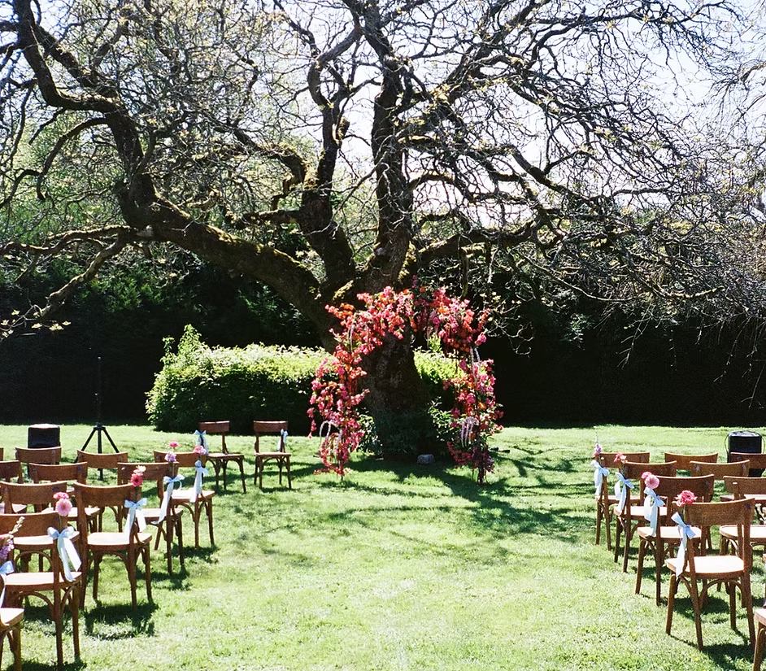
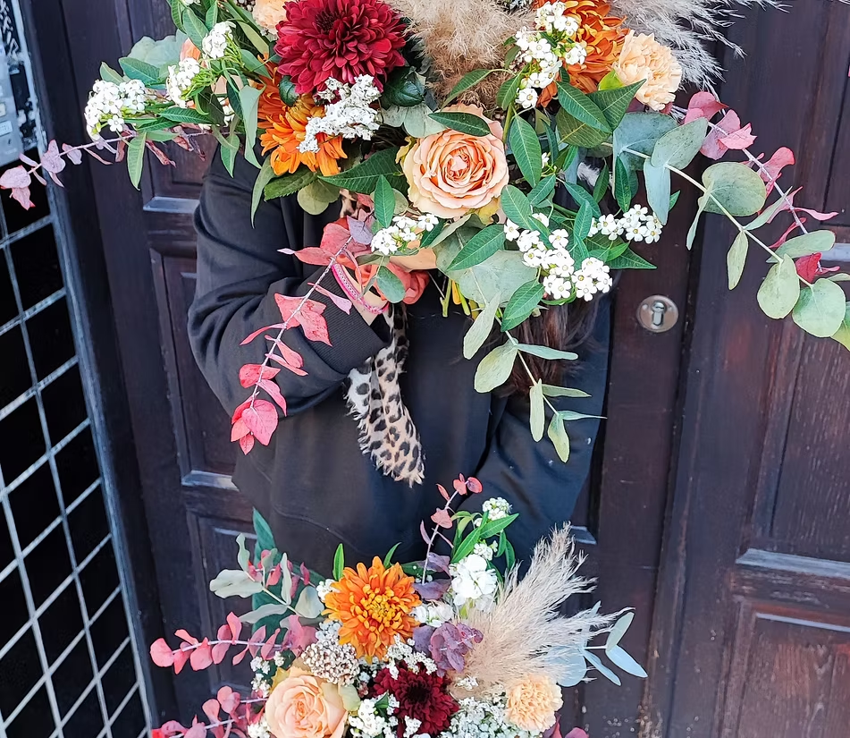
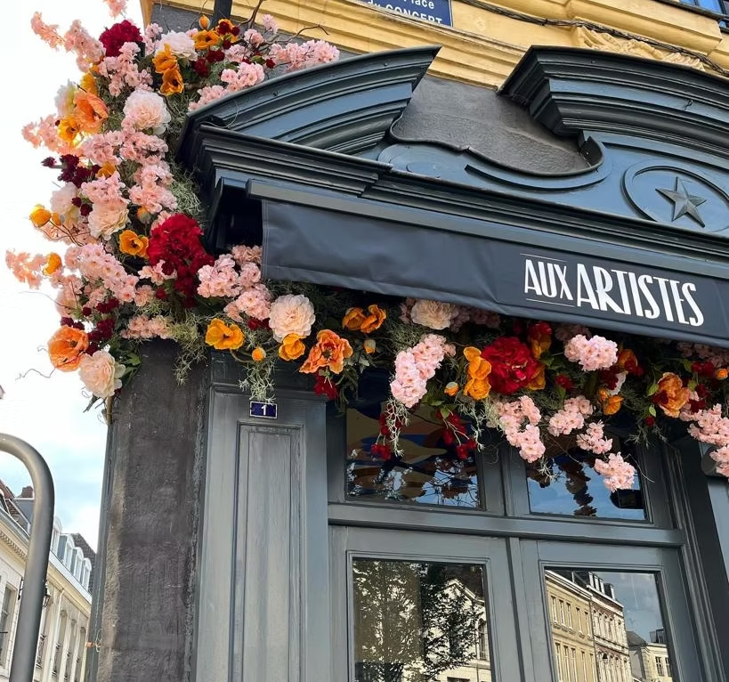
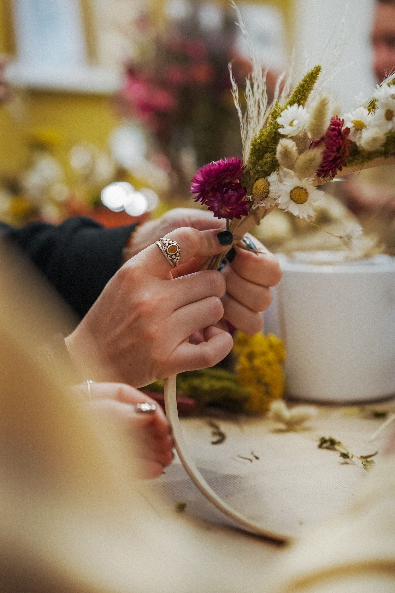
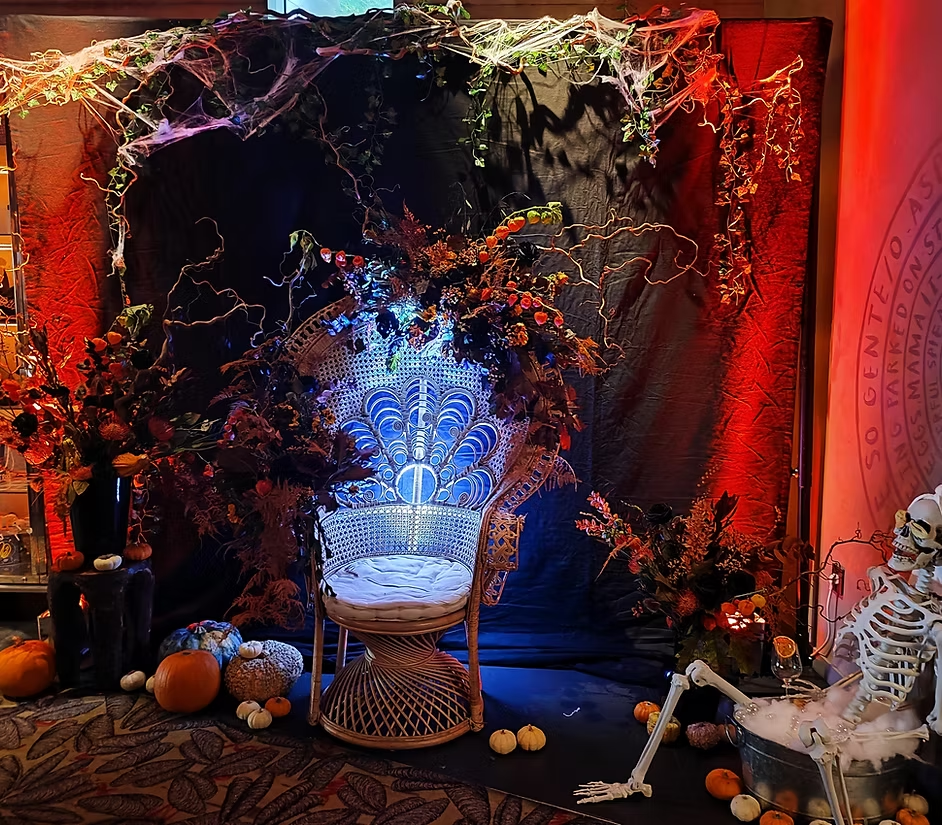

Coup de cœur

Mariages
Des mariages sur mesure, à votre image et pour tous les budgets. Discutons autour d'un café pour donner forme à votre projet.
Contactez-moi →Le studio floral le plus cool qui soit — Mariage · Événement · Pro & Particulier


Évènements, mariages, bouquets, arches, devantures… un peu de décoration florale pour tous les goûts.

Des mariages sur mesure, à votre image et pour tous les budgets. Discutons autour d'un café pour donner forme à votre projet.
Contactez-moi →
Des abonnements floraux pour pros et particuliers, au rythme qui vous convient : hebdomadaire, bimensuel ou mensuel.
Contactez-moi →
Devanture, vitrine ou intérieur : je crée une décoration florale sur mesure pour sublimer vos espaces.
Contactez-moi →
Des ateliers floraux pour entreprises, particuliers, EVJF et occasions sur mesure : bouquets, couronnes, terrariums et plus encore.
Contactez-moi →
Événements pro ou privés, shooting, anniversaire ou baptême : je crée un décor floral adapté à votre ambiance.
Contactez-moi →Un aperçu de mes créations — chaque projet est une nouvelle aventure florale


Décrivez votre besoin et ouvrez directement votre demande dans WhatsApp pour échanger plus rapidement.